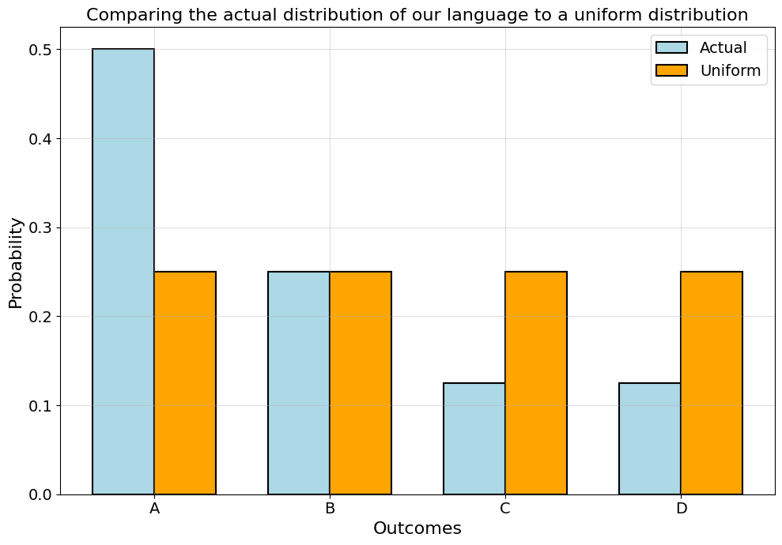
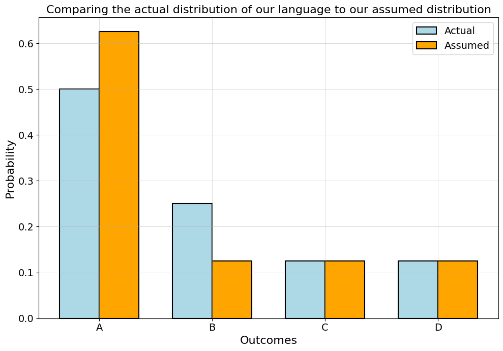
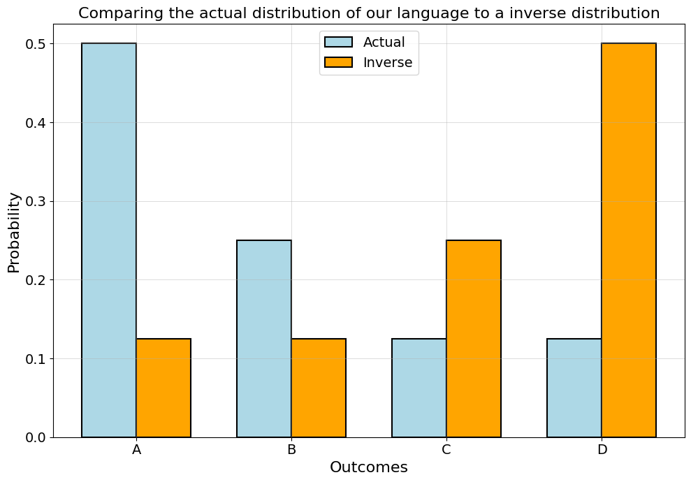

Code Toggle
import math
import numpy as np
import pandas as pd
import random
import seaborn as sns
from collections import Counter
from matplotlib import pyplot as pltimport math
import numpy as np
import pandas as pd
import random
import seaborn as sns
from collections import Counter
from matplotlib import pyplot as pltLet’s reiterate what we’ve learned so far.
First, we’ve learned to calculate:
Second, we know that:
But what if we want to compare distributions? What if we want to somehow measure the entropy of their difference?
Let’s start with two familiar examples. - We have our language with \(A\), \(B\), \(C\) and \(D\). - We know their probabilities. - We also know what it would look like if we assumed an uniform distribution for them.
Let’s now compare these two distributions.
def compare_distributions_in_plot(outcomes,
first_dist,
second_dist,
first_label,
second_label,
xlabel="Outcomes",
ylabel="Probability",
title="Two distributions"):
x = np.arange(len(outcomes))
width = 0.35 # spacing between the two bars
fig, ax = plt.subplots(figsize=(10,7))
# outline-only bars for the clean style
ax.bar(x - width/2, first_dist, width,
edgecolor="black", color="lightblue", fill=True, linewidth=1.5, label=first_label)
ax.bar(x + width/2, second_dist, width,
edgecolor="black", color="orange", fill=True, linewidth=1.5, label=second_label)
ax.set_xlabel(xlabel, fontsize=16)
ax.set_ylabel(ylabel, fontsize=16)
ax.set_xticks(x)
ax.set_xticklabels(outcomes)
ax.tick_params(axis='both', which='major', labelsize=14)
ax.grid(True, linestyle='-', linewidth=0.5, alpha=0.6)
ax.legend(fontsize=14)
ax.set_title(title, fontsize=16)
plt.tight_layout()
plt.show()language = ['A', 'B', 'C', 'D']
uniform_probs = [0.25]*4
lang_probs = [0.5, 0.25, 0.125, 0.125]compare_distributions_in_plot(language,
lang_probs,
uniform_probs,
'Actual',
'Uniform',
'Outcomes',
'Probability',
'Comparing the actual distribution of our language to a uniform distribution')
One way we could compare them, is to just take their ratio. We will call this ratio “relative entropy”:
\[ \text{Relative entropy} = \frac{\text{Entropy of a distribution}}{\text{The max entropy of the same distribution}} \]
PROMPT: Can you write that in Python for our example above? Wrap it in a function like this: def relative_entropy(true_ent, max_ent).
Recall the entropies of these two distributions:
def entropy_np(p):
p = np.array(list(p))
p = p[p > 0]
return -np.sum(p * np.log2(p))uniform_entropy = entropy_np(uniform_probs)
uniform_entropy.item()2.0lang_entropy = entropy_np(lang_probs)
lang_entropy.item()1.75def relative_entropy(true_ent, max_ent):
return true_ent / max_entrelative_entropy(lang_entropy, uniform_entropy).item()0.875Shannon introduces this concept in his work to describe the difference between the entropy of our source and a completely uniform version of the same source. In Shannon’s (p. 56) own words:
The ratio of the entropy of a source to the maximum value it could have while still restricted to the same symbols will be called its relative entropy.
What does relative entropy capture then? Weaver gets into this question in his intro to Shannon’s work:
If the relative entropy of a certain source is, say .8, this roughly means that this source is, in its choice of symbols to form a message, about 80 per cent as free as it could possibly be with these same symbols.
Shannon himself did a bunch of experiments to conclude that the redundancy of written English is about 50%. In his opinion:
This means that when we write English half of what we write is determined by the structure of the language and half is chosen freely.
One way to better understand what relative entropy captures, is by looking at it’s relationship to redundancy. Shannon defined redundancy in terms of relative entropy as:
\[ \text{Redundancy }= 1-\text{ Relative Entropy} \]
Relative entropy tells us how much freedom we have and redundancy tells us how much we lack. The uniform distribution is total freedom: Everything is equally possible! Once we add structure, our choices become more constrained. According to Shannon, redundancy
is the fraction of the structure of the message which is determined not by the free choice of the sender, but rather by the accepted statistical rules governing the use of the symbols in question.
There are some interesting philosophical implications here: Our use of language is just the actualization of the virtual space of possible outcomes, governed by statistical rules. A decisively posthuman vision of communication!
PROMPT: What is the redundancy of our artificial language?
If we go back to our actual data, we can see that our language has 0.875 relative entropy and 0.125 redundancy.
relative_entropy(lang_entropy, uniform_entropy).item()0.8751-relative_entropy(lang_entropy, uniform_entropy).item()0.125While Shannon and Weaver limited their analysis of relative entropy to the ratio between the entropy of a source and its max entropy, the principle of calculating such ratios can be extended.
Let’s now instead say that we are familiar with the language \(A\), \(B\), \(C\) \(D\), but we don’t quite know what the probabilities for each outcome are. Based on our prior knowledge, we would guess it is something like this:
\[ \begin{aligned} p(A) &= 0.625 \\ p(B) &= 0.125 \\ p(C) &= 0.125 \\ p(D) &= 0.125 \end{aligned} \]
assumed_probs = [0.625, 0.125, 0.125, 0.125]
sum(assumed_probs)1.0Comparing these visually, we see that it’s an okay estimation.
compare_distributions_in_plot(language,
lang_probs,
assumed_probs,
'Actual',
'Assumed',
'Outcomes',
'Probability',
'Comparing the actual distribution of our language to our assumed distribution')
The entropy for our estimate is:
assumed_entropy = entropy_np(assumed_probs)
assumed_entropynp.float64(1.5487949406953985)And compared to you actual entropy, we see that our assumed language is actually more structured. The high probability given to \(A\) makes it more deterministic:
relative_entropy(lang_entropy, assumed_entropy)np.float64(1.1299107157557358)Let’s stop for a moment to recall what we set out to do: We wanted to find a metric to measure the difference between different probability distributions. And now we’ve done?!
Well yes, kind of. But there’s a problem.
PROMPT: What might isse be with using relative entropy to compare distributions?
Well, the problem is that relative entropy doesn’t account for the individual probabilities of our outcomes. What kind of issues might this create? Let’s clarify with an example.
Imagine our language from above, but with inverse probabilities. So:
\[ \begin{aligned} p(A) &= 0.125 \\ p(B) &= 0.125 \\ p(C) &= 0.25 \\ p(D) &= 0.5 \end{aligned} \]
inverse_probs = lang_probs.copy()
inverse_probs.reverse()
inverse_probs[0.125, 0.125, 0.25, 0.5]Now we see that while our distributions have shaped that mirror each other, our estimate would surely produce terrible predictions!
compare_distributions_in_plot(language,
lang_probs,
inverse_probs,
'Actual',
'Inverse',
'Outcomes',
'Probability',
'Comparing the actual distribution of our language to a inverse distribution')
PROMPT: What is the relative entropy between these two distributions?
reversed_entropy = entropy_np(inverse_probs)
reversed_entropynp.float64(1.75)relative_entropy(lang_entropy, reversed_entropy)np.float64(1.0)relative_entropy(lang_entropy, lang_entropy)np.float64(1.0)Relative entropy says nothing about the actual shape of the distribution, it just tells what it’s mean is. We will need sharper tools to actually compare distributions. But we will still use entropy!
Today, no one uses relative entropy or redundancy in machine learning, at least not in the sense that they were defined by Shannon. Instead, people use metrics that were further developed from the idea of relative entropy by other people who built on Shannon’s work.
One particularly important measure like this is the Kullback-Leibler Divergence or \(\mathbb{KL}\). - It was developed by mathemtaicians Solomon Kullback and Richard Leibler in a 1951 paper. - While they didn’t name it after themselves, other people since then have started using this name. - It’s from the \(\mathbb{KL}\) divergence that cross-entrop, the perhaps most commonly used tool for comparing distributions in ML, is derived.
Let’s start with intuition again.
What if for every outcome \(x_i\) in our distribution, we compared the number of bits we need to encode that outcome?
PROMPT: Can you code such a for-loop in Python?
entropy_diff = 0
for p in lang_probs:
entropy_diff += (np.log2(p) - np.log2(0.25))
entropy_diffnp.float64(-1.0)What? We actually need in total one bit more to encode our structured language than we need for the uniform distribution. And indeed, this is true, we see it from our bit tables:
def print_bit_table(outcome, bits, probs):
n_bits = [len(b) for b in bits]
return pd.DataFrame(
{'outcomes':outcome,
'bits':bits,
'n_bits':n_bits,
'prob':np.round(probs, 3).astype(str)
}).style.hide()lang_bits = ['0', '10', '110', '111']
print_bit_table(language, lang_bits, lang_probs)| outcomes | bits | n_bits | prob |
|---|---|---|---|
| A | 0 | 1 | 0.5 |
| B | 10 | 2 | 0.25 |
| C | 110 | 3 | 0.125 |
| D | 111 | 3 | 0.125 |
uniform_bits = ['00', '01', '10', '11']
print_bit_table(language, uniform_bits, uniform_probs)| outcomes | bits | n_bits | prob |
|---|---|---|---|
| A | 00 | 2 | 0.25 |
| B | 01 | 2 | 0.25 |
| C | 10 | 2 | 0.25 |
| D | 11 | 2 | 0.25 |
print_bit_table(language, uniform_bits, uniform_probs)| outcomes | bits | n_bits | prob |
|---|---|---|---|
| A | 00 | 2 | 0.25 |
| B | 01 | 2 | 0.25 |
| C | 10 | 2 | 0.25 |
| D | 11 | 2 | 0.25 |
Our structured language requires 9 bits to encode, our uniform distribution only takes 8:
n_lang_bits = [1,2,3,3]print(sum(n_lang_bits))
print(4*2)9
8But entropy isn’t about sums, it’s about weighted sums, also known as “expected value” or, simply, “mean”.
So if we rewrite our loop, but now weigh every difference. What should we weigh it by? - Well, how about the probabilities of the actual distribution we are interested in? - Weighing the loop with the probabilities of our language, we get:
entropy_diff = 0
for p in lang_probs:
entropy_diff += p*(np.log2(p) - np.log2(0.25))
entropy_diffnp.float64(0.25)What we now get is the distance of the uniform distribution from the vantage point of our the probabilities of our artificial language. And this is the \(\mathbb{KL}\) divergence! That’s all there is to it. Let’s write it in numpy and try it out.
PROMPT: Write the \(\mathbb{KL}\) divergence in numpy.
Hint: Here you have it as a loop:
def kl_divergence_loop(p, q):
kld = 0
for idx, p in enumerate(lang_probs):
kld += p*(np.log2(p) - np.log2(q[idx]))
return klddef kl_divergence(p, q):
return np.sum(p * np.log2(p / q), 0)Nice! Let’s try it out:
Our uniform distribution is on average 0.25 bits away from our actual distribution.
kl_divergence(np.array(lang_probs), np.array(uniform_probs))np.float64(0.25)Why is this true? Because, as we saw above, their total distance is \(1\), so with four outcomes the average distance is \(\frac{1}{4} = 0.25\).
Our estimate for the language is already a lot closer:
kl_divergence(np.array(lang_probs), np.array(assumed_probs))np.float64(0.08903595255631885)Then, if we compare our language to itself, the distance is \(0\):
This means that we know exactly what distribution \(P\) generated the data and the difference in bits needed to encode the distributions is zero. In other words,
it means that we can correctly predict the probabilities of all possible future events, and thus we have learned to predict the future as well as an ’oracle’ that has access to the true distribution P (Murphy 2021, 243).
Finally, how does the \(\mathbb{KL}\) divergence do on our inverse distribution?
kl_divergence(np.array(lang_probs), np.array(inverse_probs))np.float64(0.875)Quite well, it turns out! Whereas relative entropy was unable to distinguish them, \(\mathbb{KL}\) divergence shows that they are further away from each other than any other distributions we compared.
\[\begin{aligned} \mathbb{KL}(p \Vert q) &= \overbrace{E\big[\log_2 p(x_i) - \log_2 q(x_i)\big]}^{\color{red}{\text{Expected surprise of p when encoding with q}}} \\ &= \sum_i p(x_i) \big[\log_2 p(x_i) - \log_2 q(x_i)\big] \\ &= \sum_i p(x_i) \log_2 \frac{p(x_i)}{q(x_i)} \\ &= \sum_i p(x_i)\log_2 p(x_i) - \sum_i p(x_i)\log_2 q(x_i) \\ &= \underbrace{-\mathbb{H}(p)}_{\text{Negentropy of p}} + \underbrace{\mathbb{H}(p,q)}_{\text{Cross-entropy between p and q}} \end{aligned}\]Looks hard? Well, sure. But mostly because we aren’t familiar with the notation and the associated rules of different symbols. Building up the intuition slowly and in code, it’s hopefully more clear :)
Now we can move on to our last part: cross-entropy. This function is the last terms of the \(\mathbb{KL}\) divergence above and probably the most commonly used optimization function in neural networks today.
With cross-entropy, we take a step back and go to the original definition of entropy. - What if we encoded our artificial language with bits corresponding to some other language. - For example: What if we used the bits for the uniform distribution to encode the artificial language? - How many bits would we then need on average.
Let’s say the distributions \(P\) and \(Q\) have the same outcomes \(x_i\), but with different probabilities \(p(x_i)\) and \(q(x_i)\). Then, in terms of our equation for information, it would look like this:
\[ \begin{equation} \mathbb{H}(P,Q) = -\overbrace{\sum_{i=1}^N p(x_i)}^\text{Weighted sum for P} \underbrace{\log_2 q(x_i)}_\text{Bits for Q} \end{equation} \]
We can modify our \(\mathbb{KL}\) divergence loop accordingly.
PROMPT: Write cross-entropy with a for-loop or innumpy.
Hint: You can use both the for-loop and numpyimplementations of \(\mathbb{KL}\) divergence and the equation above.
def cross_entropy_loop(p, q):
ce = 0
for idx, p in enumerate(lang_probs):
ce += p*(- np.log2(q[idx]))
return cecross_entropy_loop(lang_probs, uniform_probs)np.float64(2.0)def cross_entropy_np(p, q):
return -np.sum(p * np.log2(q))cross_entropy_np(lang_probs, uniform_probs)np.float64(2.0)What do these numbers tell us? Well, just how many bits we need on average to encode our artificial language if we instead assume it is uniform. For our estimate, it’s already lower:
cross_entropy_np(lang_probs, assumed_probs)
But the most efficient encoding is achieved using the actual distribution of the langauge itself. And, indeed, the cross-entropy between our language and itself is just the entropy of the language! Like plain old entropy, it tells us how many bits we need on average to code the language with it’s own encoding.
cross_entropy_np(np.array(lang_probs), np.array(lang_probs))np.float64(1.75)And that’s it! You now know as much if not a lot more information theory as most people doing machine learning. Most people don’t really understand cross-entropy, they just use it :-S